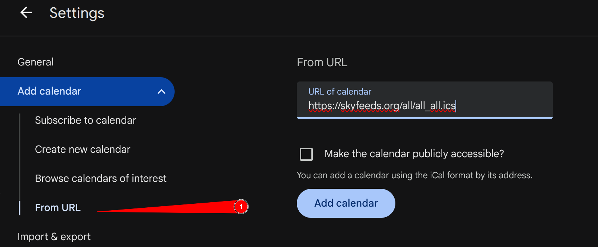

Welcome to Skyfeeds.org, your source for upcoming solar and lunar eclipses in iCal format.
This page provides a comprehensive list of upcoming solar and lunar eclipses, including their dates, peak times, types, and visibility across different continents and countries. You can download the events in iCal format for easy integration into your calendar. The solar eclipses are categorized by continent and country, allowing you to find specific events relevant to your location. Lunar eclipses are also listed with their types.
Also given are links for "All celestial events" for countries/continents. It is an iCal that has all total solar eclipses for that country/continent and all lunar eclipses. If you are unsure what you want, it is probably that for your country.
What are iCal files?
iCal files (.ics) are a standard format for sharing calendar events. You can subscribe to or import
these files into your favorite calendar app (such as Google Calendar, Apple Calendar, or Outlook)
to keep track of upcoming solar and lunar eclipses. To add an iCal file to your calendar, right click
on the link and copy the URL, then import it into your calendar app.
Here is how it looks when doing it with Google:

These links are non-geographic and provide all global solar and lunar eclipses in iCal format.
Here are the upcoming solar eclipses categorized by continent and country.
| Date | Peak Time | Type | Countries with visibility | Link |
|---|---|---|---|---|
| 2021-12-04 | 07:34:38 (UTC) | total | Antarctica | Details |
| 2022-10-25 | 11:01:19 (UTC) | partial | Details | |
| 2025-03-29 | 10:48:36 (UTC) | partial | Russia | Details |
| 2026-02-17 | 12:13:05 (UTC) | annular | Argentina , Chile , Antarctica | Details |
| 2026-08-12 | 17:47:05 (UTC) | total | Greenland , Iceland , Spain | Details |
| 2027-02-06 | 16:00:47 (UTC) | annular | Chile , Argentina | Details |
| 2027-08-02 | 10:07:49 (UTC) | total | Morocco , Spain , Algeria , Libya , Egypt , Saudi Arabia , Yemen , Somalia | Details |
| 2028-01-26 | 15:08:58 (UTC) | annular | Ecuador , Peru , Brazil , Suriname , Spain , Portugal | Details |
| 2030-06-01 | 06:29:13 (UTC) | annular | Algeria , Tunisia , Greece , Turkey , Russia , China , Japan | Details |
| 2030-11-25 | 06:51:37 (UTC) | total | Botswana , South Africa , Australia | Details |
| 2031-05-21 | 07:16:04 (UTC) | annular | Angola , Congo , Zambia , Tanzania , India , Malaysia , Indonesia | Details |
| 2032-05-09 | 13:26:42 (UTC) | annular | Details | |
| 2034-03-20 | 10:18:45 (UTC) | total | Nigeria , Cameroon , Chad , Sudan , Egypt , Saudi Arabia , Iran , Afghanistan , Pakistan , India , China | Details |
| 2036-08-21 | 17:25:45 (UTC) | partial | US , Canada | Details |
| 2037-01-16 | 09:48:55 (UTC) | partial | Details | |
| 2038-01-05 | 13:47:10 (UTC) | annular | Cuba , Dominican Republic , Cote d'Ivoire , Ghana , Niger , Chad , Egypt | Details |
| 2038-07-02 | 13:32:54 (UTC) | annular | Colombia , Venezuela , Mauritania , Morocco , Mali , Niger , Chad , Sudan , Ethiopia , Kenya | Details |
| 2041-04-30 | 11:52:20 (UTC) | total | Brazil , Angola , Congo , Uganda , Kenya , Somalia | Details |
| 2045-08-12 | 17:42:39 (UTC) | total | US , Haiti , Dominican Republic , Venezuela , Guyana , French Guiana , Suriname , Brazil | Details |
| 2046-08-02 | 10:21:13 (UTC) | total | Brazil , Angola , Namibia , Botswana , South Africa , Swaziland , Mozambique | Details |
| 2048-06-11 | 12:58:52 (UTC) | annular | US , Canada , Greenland , Iceland , Norway , Sweden , Russia , Afghanistan | Details |
| 2048-12-05 | 15:35:27 (UTC) | total | Chile , Argentina , Namibia , Botswana | Details |
| 2049-05-31 | 13:59:58 (UTC) | annular | US , Peru , Ecuador , Colombia , Venezuela , Guyana , Senegal , Mali , Burkina Faso , Ghana , Nigeria | Details |
| 2049-11-25 | 05:33:47 (UTC) | hybrid | Saudi Arabia , Yemen , Malaysia , Indonesia | Details |
| 2053-03-20 | 07:08:19 (UTC) | annular | Indonesia | Details |
| 2053-09-12 | 09:34:09 (UTC) | total | Morocco , Algeria , Tunisia , Libya , Egypt , Saudi Arabia , Indonesia | Details |
| 2054-03-09 | 12:33:40 (UTC) | partial | Antarctica , South Africa , Madagascar , Chile | Details |
| 2055-07-24 | 09:57:49 (UTC) | total | South Africa , Antarctica | Details |
| 2057-01-05 | 09:47:51 (UTC) | total | Australia | Details |
| 2058-05-22 | 10:39:25 (UTC) | partial | South Africa , Madagascar | Details |
| 2059-11-05 | 09:18:14 (UTC) | annular | France , Libya , Egypt , Sudan , Ethiopia , Eritrea , Somalia , Indonesia | Details |
| 2060-04-30 | 10:09:59 (UTC) | total | Ivory Coast , Ghana , Togo , Benin , Nigeria , Niger , Chad , Libya , Egypt , Turkey , Kazakhstan , Russia | Details |
| 2060-10-24 | 09:24:10 (UTC) | annular | Guinea , Sierra Leone , Liberia , Ivory Coast , Angola , Namibia , Botswana , South Africa | Details |
| 2063-02-28 | 07:43:29 (UTC) | annular | Indonesia , Malaysia | Details |
| 2064-02-17 | 07:00:23 (UTC) | annular | Democratic Republic of Congo , Zambia , Tanzania , India , Nepal , Bangladesh , Bhutan , China | Details |
| 2065-02-05 | 09:52:25 (UTC) | partial | Details | |
| 2065-08-02 | 05:34:16 (UTC) | partial | Antarctica , South Africa , Madagascar | Details |
| 2067-12-06 | 14:03:42 (UTC) | hybrid | Honduras , Nicaragua , Colombia , Venezuela , Guyana , Brazil , Nigeria , Cameroon , Chad , Sudan | Details |
| 2069-04-21 | 10:11:08 (UTC) | partial | Details | |
| 2070-10-04 | 07:08:56 (UTC) | annular | Angola , Zambia , Zimbabwe , Mozambique , Madagascar | Details |
| Date | Peak Time | Type | Countries with visibility | Link |
|---|---|---|---|---|
| 2064-08-12 | 17:46:05 (UTC) | total | Chile , Argentina | Details |
| 2067-06-11 | 20:42:26 (UTC) | annular | Ecuador , Peru | Details |
| 2067-12-06 | 14:03:42 (UTC) | hybrid | Honduras , Nicaragua , Colombia , Venezuela , Guyana , Brazil , Nigeria , Cameroon , Chad , Sudan | Details |
| Date | Peak Time | Type | Countries with visibility | Link |
|---|---|---|---|---|
| 2021-12-04 | 07:34:38 (UTC) | total | Antarctica | Details |
| 2025-09-21 | 19:43:04 (UTC) | partial | New Zealand , Antarctica | Details |
| 2026-02-17 | 12:13:05 (UTC) | annular | Argentina , Chile , Antarctica | Details |
| 2027-02-06 | 16:00:47 (UTC) | annular | Chile , Argentina | Details |
| 2029-12-05 | 15:03:57 (UTC) | partial | Argentina , Chile , Antarctica | Details |
| 2030-11-25 | 06:51:37 (UTC) | total | Botswana , South Africa , Australia | Details |
| 2033-09-23 | 13:54:31 (UTC) | partial | Details | |
| 2035-03-09 | 23:05:53 (UTC) | annular | New Zealand , Mexico | Details |
| 2036-02-27 | 04:46:49 (UTC) | partial | Antarctica , Australia , New Zealand | Details |
| 2038-12-26 | 01:00:10 (UTC) | total | Australia , New Zealand | Details |
| 2039-12-15 | 16:23:46 (UTC) | total | Antarctica | Details |
| 2040-05-11 | 03:43:02 (UTC) | partial | Australia , New Zealand , Antarctica | Details |
| 2042-10-14 | 02:00:41 (UTC) | annular | Thailand , Malaysia , Indonesia , Australia , New Zealand | Details |
| 2043-10-03 | 03:01:48 (UTC) | annular | Australia | Details |
| 2044-02-28 | 20:24:39 (UTC) | annular | Details | |
| 2047-12-16 | 23:50:12 (UTC) | partial | Antarctica , Chile , Argentina | Details |
| 2051-10-04 | 21:02:14 (UTC) | partial | Antarctica , Australia , New Zealand | Details |
| 2052-09-22 | 23:39:09 (UTC) | annular | Australia , New Zealand | Details |
| 2053-03-20 | 07:08:19 (UTC) | annular | Indonesia | Details |
| 2054-03-09 | 12:33:40 (UTC) | partial | Antarctica , South Africa , Madagascar , Chile | Details |
| 2054-08-03 | 18:04:01 (UTC) | partial | Antarctica | Details |
| 2055-07-24 | 09:57:49 (UTC) | total | South Africa , Antarctica | Details |
| 2057-01-05 | 09:47:51 (UTC) | total | Australia | Details |
| 2057-12-26 | 01:14:35 (UTC) | total | Antarctica , Australia | Details |
| 2060-10-24 | 09:24:10 (UTC) | annular | Guinea , Sierra Leone , Liberia , Ivory Coast , Angola , Namibia , Botswana , South Africa | Details |
| 2061-10-13 | 10:32:09 (UTC) | annular | Antarctica , Argentina , Chile | Details |
| 2062-03-11 | 04:26:15 (UTC) | partial | Antarctica , Australia , New Zealand | Details |
| 2063-02-28 | 07:43:29 (UTC) | annular | Indonesia , Malaysia | Details |
| 2064-08-12 | 17:46:05 (UTC) | total | Chile , Argentina | Details |
| 2065-08-02 | 05:34:16 (UTC) | partial | Antarctica , South Africa , Madagascar | Details |
| 2065-12-27 | 08:39:55 (UTC) | partial | Chile , Argentina , Antarctica , Australia | Details |
| 2066-12-17 | 00:23:39 (UTC) | total | Australia , New Zealand | Details |
| 2068-05-31 | 03:56:39 (UTC) | total | Australia , New Zealand | Details |
| 2069-05-20 | 17:53:17 (UTC) | partial | Details | |
| 2069-10-15 | 04:19:56 (UTC) | partial | Antarctica | Details |
| 2070-10-04 | 07:08:56 (UTC) | annular | Angola , Zambia , Zimbabwe , Mozambique , Madagascar | Details |
| Date | Peak Time | Type | Countries with visibility | Link |
|---|---|---|---|---|
| 2021-06-10 | 10:43:06 (UTC) | annular | Canada , Greenland , Russia | Details |
| 2022-10-25 | 11:01:19 (UTC) | partial | Details | |
| 2023-04-20 | 04:17:55 (UTC) | hybrid | Indonesia , Australia , Papua New Guinea | Details |
| 2027-08-02 | 10:07:49 (UTC) | total | Morocco , Spain , Algeria , Libya , Egypt , Saudi Arabia , Yemen , Somalia | Details |
| 2028-07-22 | 02:56:39 (UTC) | total | Australia , New Zealand | Details |
| 2029-06-12 | 04:06:13 (UTC) | partial | Canada | Details |
| 2030-06-01 | 06:29:13 (UTC) | annular | Algeria , Tunisia , Greece , Turkey , Russia , China , Japan | Details |
| 2031-05-21 | 07:16:04 (UTC) | annular | Angola , Congo , Zambia , Tanzania , India , Malaysia , Indonesia | Details |
| 2032-11-03 | 05:34:12 (UTC) | partial | Details | |
| 2034-03-20 | 10:18:45 (UTC) | total | Nigeria , Cameroon , Chad , Sudan , Egypt , Saudi Arabia , Iran , Afghanistan , Pakistan , India , China | Details |
| 2035-09-02 | 01:56:46 (UTC) | total | China , Korea , Japan | Details |
| 2037-01-16 | 09:48:55 (UTC) | partial | Details | |
| 2038-12-26 | 01:00:10 (UTC) | total | Australia , New Zealand | Details |
| 2041-10-25 | 01:36:21 (UTC) | annular | Mongolia , China , Korea , Japan | Details |
| 2042-04-20 | 02:17:30 (UTC) | total | Malaysia , Indonesia , Philippines | Details |
| 2042-10-14 | 02:00:41 (UTC) | annular | Thailand , Malaysia , Indonesia , Australia , New Zealand | Details |
| 2043-04-09 | 18:57:49 (UTC) | total | Russia | Details |
| 2044-08-23 | 01:17:01 (UTC) | total | Greenland , Canada , US | Details |
| 2047-01-26 | 01:33:17 (UTC) | partial | China , Japan , US | Details |
| 2047-06-23 | 10:52:30 (UTC) | partial | Canada , Greenland , Russia | Details |
| 2048-06-11 | 12:58:52 (UTC) | annular | US , Canada , Greenland , Iceland , Norway , Sweden , Russia , Afghanistan | Details |
| 2049-11-25 | 05:33:47 (UTC) | hybrid | Saudi Arabia , Yemen , Malaysia , Indonesia | Details |
| 2051-04-11 | 02:10:38 (UTC) | partial | Canada , Greenland | Details |
| 2053-09-12 | 09:34:09 (UTC) | total | Morocco , Algeria , Tunisia , Libya , Egypt , Saudi Arabia , Indonesia | Details |
| 2054-09-02 | 01:09:33 (UTC) | partial | US , Canada , Greenland | Details |
| 2057-07-01 | 23:40:15 (UTC) | annular | China , Mongolia , Russia , Canada , US | Details |
| 2059-11-05 | 09:18:14 (UTC) | annular | France , Libya , Egypt , Sudan , Ethiopia , Eritrea , Somalia , Indonesia | Details |
| 2060-04-30 | 10:09:59 (UTC) | total | Ivory Coast , Ghana , Togo , Benin , Nigeria , Niger , Chad , Libya , Egypt , Turkey , Kazakhstan , Russia | Details |
| 2061-04-20 | 02:56:49 (UTC) | total | Kazakhstan , Russia | Details |
| 2062-09-03 | 08:54:26 (UTC) | partial | Greenland | Details |
| 2063-02-28 | 07:43:29 (UTC) | annular | Indonesia , Malaysia | Details |
| 2063-08-24 | 01:22:10 (UTC) | total | China , Mongolia , Japan | Details |
| 2064-02-17 | 07:00:23 (UTC) | annular | Democratic Republic of Congo , Zambia , Tanzania , India , Nepal , Bangladesh , Bhutan , China | Details |
| 2065-02-05 | 09:52:25 (UTC) | partial | Details | |
| 2066-06-22 | 19:25:47 (UTC) | annular | Russia , US , Canada | Details |
| 2069-04-21 | 10:11:08 (UTC) | partial | Details | |
| 2070-04-11 | 02:36:09 (UTC) | total | Sri Lanka , Myanmar , Thailand , Laos , Vietnam , Philippines , US , Canada | Details |
| Date | Peak Time | Type | Countries with visibility | Link |
|---|---|---|---|---|
| 2021-06-10 | 10:43:06 (UTC) | annular | Canada , Greenland , Russia | Details |
| 2022-10-25 | 11:01:19 (UTC) | partial | Details | |
| 2025-03-29 | 10:48:36 (UTC) | partial | Russia | Details |
| 2026-08-12 | 17:47:05 (UTC) | total | Greenland , Iceland , Spain | Details |
| 2027-08-02 | 10:07:49 (UTC) | total | Morocco , Spain , Algeria , Libya , Egypt , Saudi Arabia , Yemen , Somalia | Details |
| 2028-01-26 | 15:08:58 (UTC) | annular | Ecuador , Peru , Brazil , Suriname , Spain , Portugal | Details |
| 2030-06-01 | 06:29:13 (UTC) | annular | Algeria , Tunisia , Greece , Turkey , Russia , China , Japan | Details |
| 2034-03-20 | 10:18:45 (UTC) | total | Nigeria , Cameroon , Chad , Sudan , Egypt , Saudi Arabia , Iran , Afghanistan , Pakistan , India , China | Details |
| 2036-08-21 | 17:25:45 (UTC) | partial | US , Canada | Details |
| 2037-01-16 | 09:48:55 (UTC) | partial | Details | |
| 2038-01-05 | 13:47:10 (UTC) | annular | Cuba , Dominican Republic , Cote d'Ivoire , Ghana , Niger , Chad , Egypt | Details |
| 2038-07-02 | 13:32:54 (UTC) | annular | Colombia , Venezuela , Mauritania , Morocco , Mali , Niger , Chad , Sudan , Ethiopia , Kenya | Details |
| 2039-06-21 | 17:12:53 (UTC) | annular | US , Canada , Norway , Sweden , Finland , Estonia , Russia | Details |
| 2048-06-11 | 12:58:52 (UTC) | annular | US , Canada , Greenland , Iceland , Norway , Sweden , Russia , Afghanistan | Details |
| 2049-05-31 | 13:59:58 (UTC) | annular | US , Peru , Ecuador , Colombia , Venezuela , Guyana , Senegal , Mali , Burkina Faso , Ghana , Nigeria | Details |
| 2053-09-12 | 09:34:09 (UTC) | total | Morocco , Algeria , Tunisia , Libya , Egypt , Saudi Arabia , Indonesia | Details |
| 2059-11-05 | 09:18:14 (UTC) | annular | France , Libya , Egypt , Sudan , Ethiopia , Eritrea , Somalia , Indonesia | Details |
| 2062-09-03 | 08:54:26 (UTC) | partial | Greenland | Details |
| 2065-02-05 | 09:52:25 (UTC) | partial | Details | |
| 2065-07-03 | 17:33:52 (UTC) | partial | Russia | Details |
| 2066-06-22 | 19:25:47 (UTC) | annular | Russia , US , Canada | Details |
| 2067-12-06 | 14:03:42 (UTC) | hybrid | Honduras , Nicaragua , Colombia , Venezuela , Guyana , Brazil , Nigeria , Cameroon , Chad , Sudan | Details |
| 2069-04-21 | 10:11:08 (UTC) | partial | Details |
| Date | Peak Time | Type | Countries with visibility | Link |
|---|---|---|---|---|
| 2022-04-30 | 20:42:36 (UTC) | partial | Details | |
| 2024-10-02 | 18:46:13 (UTC) | annular | Chile , Argentina | Details |
| 2025-09-21 | 19:43:04 (UTC) | partial | New Zealand , Antarctica | Details |
| 2031-11-14 | 21:07:30 (UTC) | hybrid | US , Panama | Details |
| 2035-03-09 | 23:05:53 (UTC) | annular | New Zealand , Mexico | Details |
| 2035-09-02 | 01:56:46 (UTC) | total | China , Korea , Japan | Details |
| 2037-07-13 | 02:40:35 (UTC) | total | Australia , New Zealand | Details |
| 2038-12-26 | 01:00:10 (UTC) | total | Australia , New Zealand | Details |
| 2041-10-25 | 01:36:21 (UTC) | annular | Mongolia , China , Korea , Japan | Details |
| 2042-04-20 | 02:17:30 (UTC) | total | Malaysia , Indonesia , Philippines | Details |
| 2042-10-14 | 02:00:41 (UTC) | annular | Thailand , Malaysia , Indonesia , Australia , New Zealand | Details |
| 2045-02-16 | 23:56:06 (UTC) | annular | Australia , New Zealand , US | Details |
| 2050-05-20 | 20:42:50 (UTC) | hybrid | New Zealand | Details |
| 2052-03-30 | 18:31:52 (UTC) | total | Mexico , US | Details |
| 2052-09-22 | 23:39:09 (UTC) | annular | Australia , New Zealand | Details |
| 2056-01-16 | 22:16:45 (UTC) | annular | New Zealand , Mexico | Details |
| 2056-07-12 | 20:21:58 (UTC) | annular | Colombia , Ecuador , Peru , Brazil | Details |
| 2059-05-11 | 19:22:15 (UTC) | total | Ecuador , Peru , Brazil | Details |
| 2063-08-24 | 01:22:10 (UTC) | total | China , Mongolia , Japan | Details |
| 2064-08-12 | 17:46:05 (UTC) | total | Chile , Argentina | Details |
| 2066-12-17 | 00:23:39 (UTC) | total | Australia , New Zealand | Details |
| 2067-06-11 | 20:42:26 (UTC) | annular | Ecuador , Peru | Details |
| Date | Peak Time | Type | Countries with visibility | Link |
|---|---|---|---|---|
| 2023-10-14 | 18:00:40 (UTC) | annular | US , Colombia , Brazil | Details |
| 2024-04-08 | 18:18:29 (UTC) | total | Mexico , US , Canada | Details |
| 2029-01-14 | 17:13:47 (UTC) | partial | Details | |
| 2029-07-11 | 15:37:18 (UTC) | partial | Chile , Argentina | Details |
| 2033-03-30 | 18:02:35 (UTC) | total | Russia , US | Details |
| 2034-09-12 | 16:19:27 (UTC) | annular | Chile , Bolivia , Argentina , Paraguay , Brazil | Details |
| 2036-07-23 | 10:32:06 (UTC) | partial | Details | |
| 2040-11-04 | 19:09:01 (UTC) | partial | Details | |
| 2046-02-05 | 23:06:26 (UTC) | annular | Australia , Papua New Guinea , US | Details |
| 2047-07-22 | 22:36:16 (UTC) | partial | Australia , New Zealand | Details |
| 2050-11-14 | 13:30:52 (UTC) | partial | Details | |
| 2055-01-27 | 17:54:05 (UTC) | partial | Canada , US , Mexico , Cuba | Details |
| 2058-06-21 | 00:19:34 (UTC) | partial | Russia , Greenland , Norway , Sweden , Finland | Details |
| 2058-11-16 | 03:23:07 (UTC) | partial | Russia , China , Mongolia , Japan | Details |
| 2068-11-24 | 21:32:29 (UTC) | partial | US , Canada , Russia | Details |
| Date | Peak Time | Type | Continents | Link |
|---|---|---|---|---|
| 2034-03-20 | 14:48:45 (Asia - Kabul) | total | Africa , Asia , Europe | Details |
| 2048-06-11 | 17:28:52 (Asia - Kabul) | annular | Africa , Asia , Europe | Details |
| Date | Peak Time | Type | Continents | Link |
|---|---|---|---|---|
| 2027-08-02 | 11:07:49 (Africa - Algiers) | total | Africa , Asia , Europe | Details |
| 2030-06-01 | 07:29:13 (Africa - Algiers) | annular | Africa , Asia , Europe | Details |
| 2053-09-12 | 10:34:09 (Africa - Algiers) | total | Africa , Asia , Europe | Details |
| Date | Peak Time | Type | Continents | Link |
|---|---|---|---|---|
| 2031-05-21 | 08:16:04 (Africa - Lagos) | annular | Africa , Asia | Details |
| 2041-04-30 | 12:52:20 (Africa - Lagos) | total | Africa | Details |
| 2046-08-02 | 11:21:13 (Africa - Lagos) | total | Africa | Details |
| 2060-10-24 | 10:24:10 (Africa - Lagos) | annular | Africa , Antarctica | Details |
| 2070-10-04 | 08:08:56 (Africa - Lagos) | annular | Africa , Antarctica | Details |
| Date | Peak Time | Type | Continents | Link |
|---|---|---|---|---|
| 2021-12-04 | 18:34:38 (Antarctica - Casey) | total | Africa , Antarctica | Details |
| 2025-09-21 | 03:43:04 (Antarctica - Casey) | partial | Pacific , Antarctica | Details |
| 2026-02-17 | 20:13:05 (Antarctica - Casey) | annular | Africa , Antarctica | Details |
| 2029-12-05 | 23:03:57 (Antarctica - Casey) | partial | Antarctica | Details |
| 2036-02-27 | 12:46:49 (Antarctica - Casey) | partial | Antarctica | Details |
| 2039-12-15 | 00:23:46 (Antarctica - Casey) | total | Antarctica | Details |
| 2040-05-11 | 11:43:02 (Antarctica - Casey) | partial | Antarctica | Details |
| 2047-12-16 | 07:50:12 (Antarctica - Casey) | partial | Antarctica | Details |
| 2051-10-04 | 05:02:14 (Antarctica - Casey) | partial | Antarctica | Details |
| 2054-03-09 | 20:33:40 (Antarctica - Casey) | partial | Africa , Antarctica | Details |
| 2054-08-03 | 02:04:01 (Antarctica - Casey) | partial | Antarctica | Details |
| 2055-07-24 | 17:57:49 (Antarctica - Casey) | total | Africa , Antarctica | Details |
| 2057-12-26 | 09:14:35 (Antarctica - Casey) | total | Antarctica | Details |
| 2061-10-13 | 18:32:09 (Antarctica - Casey) | annular | Antarctica | Details |
| 2062-03-11 | 12:26:15 (Antarctica - Casey) | partial | Antarctica | Details |
| 2065-08-02 | 13:34:16 (Antarctica - Casey) | partial | Africa , Antarctica | Details |
| 2065-12-27 | 16:39:55 (Antarctica - Casey) | partial | Antarctica | Details |
| 2069-10-15 | 12:19:56 (Antarctica - Casey) | partial | Antarctica | Details |
| Date | Peak Time | Type | Continents | Link |
|---|---|---|---|---|
| 2024-10-02 | 15:46:13 (America - Buenos Aires, Argentina) | annular | Pacific | Details |
| 2026-02-17 | 09:13:05 (America - Buenos Aires, Argentina) | annular | Africa , Antarctica | Details |
| 2027-02-06 | 13:00:47 (America - Buenos Aires, Argentina) | annular | Africa , Antarctica | Details |
| 2029-07-11 | 12:37:18 (America - Buenos Aires, Argentina) | partial | Unknown | Details |
| 2029-12-05 | 12:03:57 (America - Buenos Aires, Argentina) | partial | Antarctica | Details |
| 2034-09-12 | 13:19:27 (America - Buenos Aires, Argentina) | annular | Unknown | Details |
| 2047-12-16 | 20:50:12 (America - Buenos Aires, Argentina) | partial | Antarctica | Details |
| 2048-12-05 | 12:35:27 (America - Buenos Aires, Argentina) | total | Africa | Details |
| 2061-10-13 | 07:32:09 (America - Buenos Aires, Argentina) | annular | Antarctica | Details |
| 2064-08-12 | 14:46:05 (America - Buenos Aires, Argentina) | total | Americas , Pacific , Antarctica | Details |
| 2065-12-27 | 05:39:55 (America - Buenos Aires, Argentina) | partial | Antarctica | Details |
| Date | Peak Time | Type | Continents | Link |
|---|---|---|---|---|
| 2023-04-20 | 14:47:55 (Australia - Lord Howe) | hybrid | Asia | Details |
| 2028-07-22 | 13:26:39 (Australia - Lord Howe) | total | Asia | Details |
| 2030-11-25 | 17:51:37 (Australia - Lord Howe) | total | Africa , Antarctica | Details |
| 2036-02-27 | 15:46:49 (Australia - Lord Howe) | partial | Antarctica | Details |
| 2037-07-13 | 13:10:35 (Australia - Lord Howe) | total | Pacific | Details |
| 2038-12-26 | 11:30:10 (Australia - Lord Howe) | total | Asia , Pacific , Antarctica | Details |
| 2040-05-11 | 14:13:02 (Australia - Lord Howe) | partial | Antarctica | Details |
| 2042-10-14 | 13:00:41 (Australia - Lord Howe) | annular | Asia , Pacific , Antarctica | Details |
| 2043-10-03 | 13:31:48 (Australia - Lord Howe) | annular | Antarctica | Details |
| 2045-02-16 | 10:56:06 (Australia - Lord Howe) | annular | Pacific | Details |
| 2046-02-05 | 10:06:26 (Australia - Lord Howe) | annular | Unknown | Details |
| 2047-07-22 | 09:06:16 (Australia - Lord Howe) | partial | Unknown | Details |
| 2051-10-04 | 08:02:14 (Australia - Lord Howe) | partial | Antarctica | Details |
| 2052-09-22 | 10:09:09 (Australia - Lord Howe) | annular | Pacific , Antarctica | Details |
| 2057-01-05 | 20:47:51 (Australia - Lord Howe) | total | Africa , Antarctica | Details |
| 2057-12-26 | 12:14:35 (Australia - Lord Howe) | total | Antarctica | Details |
| 2062-03-11 | 15:26:15 (Australia - Lord Howe) | partial | Antarctica | Details |
| 2065-12-27 | 19:39:55 (Australia - Lord Howe) | partial | Antarctica | Details |
| 2066-12-17 | 11:23:39 (Australia - Lord Howe) | total | Pacific , Antarctica | Details |
| 2068-05-31 | 14:26:39 (Australia - Lord Howe) | total | Antarctica | Details |
| Date | Peak Time | Type | Continents | Link |
|---|---|---|---|---|
| 2064-02-17 | 13:00:23 (Asia - Dhaka) | annular | Africa , Asia | Details |
| Date | Peak Time | Type | Continents | Link |
|---|---|---|---|---|
| 2060-04-30 | 11:09:59 (Africa - Lagos) | total | Africa , Asia | Details |
| Date | Peak Time | Type | Continents | Link |
|---|---|---|---|---|
| 2064-02-17 | 13:00:23 (Asia - Thimphu) | annular | Africa , Asia | Details |
| Date | Peak Time | Type | Continents | Link |
|---|---|---|---|---|
| 2034-09-12 | 12:19:27 (America - La Paz) | annular | Unknown | Details |
| Date | Peak Time | Type | Continents | Link |
|---|---|---|---|---|
| 2030-11-25 | 08:51:37 (Africa - Maputo) | total | Africa , Antarctica | Details |
| 2046-08-02 | 12:21:13 (Africa - Maputo) | total | Africa | Details |
| 2048-12-05 | 17:35:27 (Africa - Maputo) | total | Africa | Details |
| 2060-10-24 | 11:24:10 (Africa - Maputo) | annular | Africa , Antarctica | Details |
| Date | Peak Time | Type | Continents | Link |
|---|---|---|---|---|
| 2023-10-14 | 16:00:40 (America - Noronha) | annular | Unknown | Details |
| 2028-01-26 | 13:08:58 (America - Noronha) | annular | Africa , Europe | Details |
| 2034-09-12 | 14:19:27 (America - Noronha) | annular | Unknown | Details |
| 2041-04-30 | 09:52:20 (America - Noronha) | total | Africa | Details |
| 2045-08-12 | 15:42:39 (America - Noronha) | total | Africa | Details |
| 2046-08-02 | 08:21:13 (America - Noronha) | total | Africa | Details |
| 2056-07-12 | 18:21:58 (America - Noronha) | annular | Pacific | Details |
| 2059-05-11 | 17:22:15 (America - Noronha) | total | Pacific | Details |
| 2067-12-06 | 12:03:42 (America - Noronha) | hybrid | Africa , Europe , Americas | Details |
| Date | Peak Time | Type | Continents | Link |
|---|---|---|---|---|
| 2049-05-31 | 13:59:58 (Africa - Abidjan) | annular | Africa , Europe | Details |
| Date | Peak Time | Type | Continents | Link |
|---|---|---|---|---|
| 2034-03-20 | 11:18:45 (Africa - Lagos) | total | Africa , Asia , Europe | Details |
| 2067-12-06 | 15:03:42 (Africa - Lagos) | hybrid | Africa , Europe , Americas | Details |
| Date | Peak Time | Type | Continents | Link |
|---|---|---|---|---|
| 2021-06-10 | 08:13:06 (America - St Johns) | annular | Asia , Europe | Details |
| 2024-04-08 | 15:48:29 (America - St Johns) | total | Unknown | Details |
| 2029-06-12 | 01:36:13 (America - St Johns) | partial | Asia | Details |
| 2036-08-21 | 14:55:45 (America - St Johns) | partial | Africa , Europe | Details |
| 2039-06-21 | 14:42:53 (America - St Johns) | annular | Europe | Details |
| 2044-08-23 | 22:47:01 (America - St Johns) | total | Asia | Details |
| 2047-06-23 | 08:22:30 (America - St Johns) | partial | Asia | Details |
| 2048-06-11 | 10:28:52 (America - St Johns) | annular | Africa , Asia , Europe | Details |
| 2051-04-11 | 23:40:38 (America - St Johns) | partial | Asia | Details |
| 2054-09-02 | 22:39:33 (America - St Johns) | partial | Asia | Details |
| 2055-01-27 | 14:24:05 (America - St Johns) | partial | Unknown | Details |
| 2057-07-01 | 21:10:15 (America - St Johns) | annular | Asia | Details |
| 2066-06-22 | 16:55:47 (America - St Johns) | annular | Asia , Europe | Details |
| 2068-11-24 | 18:02:29 (America - St Johns) | partial | Unknown | Details |
| 2070-04-11 | 00:06:09 (America - St Johns) | total | Asia | Details |
| Date | Peak Time | Type | Continents | Link |
|---|---|---|---|---|
| 2034-03-20 | 11:18:45 (Africa - Ndjamena) | total | Africa , Asia , Europe | Details |
| 2038-01-05 | 14:47:10 (Africa - Ndjamena) | annular | Africa , Europe | Details |
| 2038-07-02 | 14:32:54 (Africa - Ndjamena) | annular | Africa , Europe | Details |
| 2060-04-30 | 11:09:59 (Africa - Ndjamena) | total | Africa , Asia | Details |
| 2067-12-06 | 15:03:42 (Africa - Ndjamena) | hybrid | Africa , Europe , Americas | Details |
| Date | Peak Time | Type | Continents | Link |
|---|---|---|---|---|
| 2024-10-02 | 15:46:13 (America - Santiago) | annular | Pacific | Details |
| 2026-02-17 | 09:13:05 (America - Santiago) | annular | Africa , Antarctica | Details |
| 2027-02-06 | 13:00:47 (America - Santiago) | annular | Africa , Antarctica | Details |
| 2029-07-11 | 11:37:18 (America - Santiago) | partial | Unknown | Details |
| 2029-12-05 | 12:03:57 (America - Santiago) | partial | Antarctica | Details |
| 2034-09-12 | 13:19:27 (America - Santiago) | annular | Unknown | Details |
| 2047-12-16 | 20:50:12 (America - Santiago) | partial | Antarctica | Details |
| 2048-12-05 | 12:35:27 (America - Santiago) | total | Africa | Details |
| 2054-03-09 | 09:33:40 (America - Santiago) | partial | Africa , Antarctica | Details |
| 2061-10-13 | 07:32:09 (America - Santiago) | annular | Antarctica | Details |
| 2064-08-12 | 13:46:05 (America - Santiago) | total | Americas , Pacific , Antarctica | Details |
| 2065-12-27 | 05:39:55 (America - Santiago) | partial | Antarctica | Details |
| Date | Peak Time | Type | Continents | Link |
|---|---|---|---|---|
| 2030-06-01 | 14:29:13 (Asia - Shanghai) | annular | Africa , Asia , Europe | Details |
| 2034-03-20 | 18:18:45 (Asia - Shanghai) | total | Africa , Asia , Europe | Details |
| 2035-09-02 | 09:56:46 (Asia - Shanghai) | total | Asia , Pacific | Details |
| 2041-10-25 | 09:36:21 (Asia - Shanghai) | annular | Asia , Pacific | Details |
| 2047-01-26 | 09:33:17 (Asia - Shanghai) | partial | Asia | Details |
| 2057-07-01 | 07:40:15 (Asia - Shanghai) | annular | Asia | Details |
| 2058-11-16 | 11:23:07 (Asia - Shanghai) | partial | Unknown | Details |
| 2063-08-24 | 09:22:10 (Asia - Shanghai) | total | Asia , Pacific | Details |
| 2064-02-17 | 15:00:23 (Asia - Shanghai) | annular | Africa , Asia | Details |
| Date | Peak Time | Type | Continents | Link |
|---|---|---|---|---|
| 2023-10-14 | 13:00:40 (America - Bogota) | annular | Unknown | Details |
| 2038-07-02 | 08:32:54 (America - Bogota) | annular | Africa , Europe | Details |
| 2049-05-31 | 08:59:58 (America - Bogota) | annular | Africa , Europe | Details |
| 2056-07-12 | 15:21:58 (America - Bogota) | annular | Pacific | Details |
| 2067-12-06 | 09:03:42 (America - Bogota) | hybrid | Africa , Europe , Americas | Details |
| Date | Peak Time | Type | Continents | Link |
|---|---|---|---|---|
| 2031-05-21 | 07:16:04 (UTC) | annular | Africa , Asia | Details |
| 2041-04-30 | 11:52:20 (UTC) | total | Africa | Details |
| Date | Peak Time | Type | Continents | Link |
|---|---|---|---|---|
| 2038-01-05 | 13:47:10 (UTC) | annular | Africa , Europe | Details |
| Date | Peak Time | Type | Continents | Link |
|---|---|---|---|---|
| 2038-01-05 | 08:47:10 (America - Havana) | annular | Africa , Europe | Details |
| 2055-01-27 | 12:54:05 (America - Havana) | partial | Unknown | Details |
| Date | Peak Time | Type | Continents | Link |
|---|---|---|---|---|
| 2064-02-17 | 07:00:23 (UTC) | annular | Africa , Asia | Details |
| Date | Peak Time | Type | Continents | Link |
|---|---|---|---|---|
| 2038-01-05 | 09:47:10 (America - Santo Domingo) | annular | Africa , Europe | Details |
| 2045-08-12 | 13:42:39 (America - Santo Domingo) | total | Africa | Details |
| Date | Peak Time | Type | Continents | Link |
|---|---|---|---|---|
| 2028-01-26 | 10:08:58 (America - Guayaquil) | annular | Africa , Europe | Details |
| 2049-05-31 | 08:59:58 (America - Guayaquil) | annular | Africa , Europe | Details |
| 2056-07-12 | 15:21:58 (America - Guayaquil) | annular | Pacific | Details |
| 2059-05-11 | 14:22:15 (America - Guayaquil) | total | Pacific | Details |
| 2067-06-11 | 15:42:26 (America - Guayaquil) | annular | Americas , Pacific | Details |
| Date | Peak Time | Type | Continents | Link |
|---|---|---|---|---|
| 2027-08-02 | 13:07:49 (Africa - Cairo) | total | Africa , Asia , Europe | Details |
| 2034-03-20 | 12:18:45 (Africa - Cairo) | total | Africa , Asia , Europe | Details |
| 2038-01-05 | 15:47:10 (Africa - Cairo) | annular | Africa , Europe | Details |
| 2053-09-12 | 12:34:09 (Africa - Cairo) | total | Africa , Asia , Europe | Details |
| 2059-11-05 | 11:18:14 (Africa - Cairo) | annular | Africa , Asia , Europe | Details |
| 2060-04-30 | 13:09:59 (Africa - Cairo) | total | Africa , Asia | Details |
| Date | Peak Time | Type | Continents | Link |
|---|---|---|---|---|
| 2059-11-05 | 12:18:14 (Africa - Nairobi) | annular | Africa , Asia , Europe | Details |
| Date | Peak Time | Type | Continents | Link |
|---|---|---|---|---|
| 2039-06-21 | 20:12:53 (Europe - Tallinn) | annular | Europe | Details |
| Date | Peak Time | Type | Continents | Link |
|---|---|---|---|---|
| 2038-07-02 | 16:32:54 (Africa - Nairobi) | annular | Africa , Europe | Details |
| 2059-11-05 | 12:18:14 (Africa - Nairobi) | annular | Africa , Asia , Europe | Details |
| Date | Peak Time | Type | Continents | Link |
|---|---|---|---|---|
| 2039-06-21 | 20:12:53 (Europe - Helsinki) | annular | Europe | Details |
| 2058-06-21 | 03:19:34 (Europe - Helsinki) | partial | Unknown | Details |
| Date | Peak Time | Type | Continents | Link |
|---|---|---|---|---|
| 2059-11-05 | 10:18:14 (Europe - Paris) | annular | Africa , Asia , Europe | Details |
| Date | Peak Time | Type | Continents | Link |
|---|---|---|---|---|
| 2045-08-12 | 14:42:39 (America - Cayenne) | total | Africa | Details |
| Date | Peak Time | Type | Continents | Link |
|---|---|---|---|---|
| 2038-01-05 | 13:47:10 (Africa - Abidjan) | annular | Africa , Europe | Details |
| 2049-05-31 | 13:59:58 (Africa - Abidjan) | annular | Africa , Europe | Details |
| 2060-04-30 | 10:09:59 (Africa - Abidjan) | total | Africa , Asia | Details |
| Date | Peak Time | Type | Continents | Link |
|---|---|---|---|---|
| 2030-06-01 | 09:29:13 (Europe - Athens) | annular | Africa , Asia , Europe | Details |
| Date | Peak Time | Type | Continents | Link |
|---|---|---|---|---|
| 2021-06-10 | 08:43:06 (America - Nuuk) | annular | Asia , Europe | Details |
| 2026-08-12 | 16:47:05 (America - Nuuk) | total | Africa , Europe | Details |
| 2044-08-23 | 00:17:01 (America - Nuuk) | total | Asia | Details |
| 2047-06-23 | 09:52:30 (America - Nuuk) | partial | Asia | Details |
| 2048-06-11 | 11:58:52 (America - Nuuk) | annular | Africa , Asia , Europe | Details |
| 2051-04-11 | 01:10:38 (America - Nuuk) | partial | Asia | Details |
| 2054-09-02 | 00:09:33 (America - Nuuk) | partial | Asia | Details |
| 2058-06-21 | 23:19:34 (America - Nuuk) | partial | Unknown | Details |
| 2062-09-03 | 07:54:26 (America - Nuuk) | partial | Asia , Europe | Details |
| Date | Peak Time | Type | Continents | Link |
|---|---|---|---|---|
| 2060-10-24 | 09:24:10 (Africa - Abidjan) | annular | Africa , Antarctica | Details |
| Date | Peak Time | Type | Continents | Link |
|---|---|---|---|---|
| 2045-08-12 | 13:42:39 (America - Guyana) | total | Africa | Details |
| 2049-05-31 | 09:59:58 (America - Guyana) | annular | Africa , Europe | Details |
| 2067-12-06 | 10:03:42 (America - Guyana) | hybrid | Africa , Europe , Americas | Details |
| Date | Peak Time | Type | Continents | Link |
|---|---|---|---|---|
| 2045-08-12 | 13:42:39 (America - Port-au-Prince) | total | Africa | Details |
| Date | Peak Time | Type | Continents | Link |
|---|---|---|---|---|
| 2067-12-06 | 08:03:42 (America - Tegucigalpa) | hybrid | Africa , Europe , Americas | Details |
| Date | Peak Time | Type | Continents | Link |
|---|---|---|---|---|
| 2026-08-12 | 17:47:05 (Africa - Abidjan) | total | Africa , Europe | Details |
| 2048-06-11 | 12:58:52 (Africa - Abidjan) | annular | Africa , Asia , Europe | Details |
| Date | Peak Time | Type | Continents | Link |
|---|---|---|---|---|
| 2031-05-21 | 12:46:04 (Asia - Kolkata) | annular | Africa , Asia | Details |
| 2034-03-20 | 15:48:45 (Asia - Kolkata) | total | Africa , Asia , Europe | Details |
| 2064-02-17 | 12:30:23 (Asia - Kolkata) | annular | Africa , Asia | Details |
| Date | Peak Time | Type | Continents | Link |
|---|---|---|---|---|
| 2023-04-20 | 11:17:55 (Asia - Jakarta) | hybrid | Asia | Details |
| 2031-05-21 | 14:16:04 (Asia - Jakarta) | annular | Africa , Asia | Details |
| 2042-04-20 | 09:17:30 (Asia - Jakarta) | total | Asia , Pacific | Details |
| 2042-10-14 | 09:00:41 (Asia - Jakarta) | annular | Asia , Pacific , Antarctica | Details |
| 2049-11-25 | 12:33:47 (Asia - Jakarta) | hybrid | Africa , Asia | Details |
| 2053-03-20 | 14:08:19 (Asia - Jakarta) | annular | Africa , Antarctica | Details |
| 2053-09-12 | 16:34:09 (Asia - Jakarta) | total | Africa , Asia , Europe | Details |
| 2059-11-05 | 16:18:14 (Asia - Jakarta) | annular | Africa , Asia , Europe | Details |
| 2063-02-28 | 14:43:29 (Asia - Jakarta) | annular | Africa , Asia , Antarctica | Details |
| Date | Peak Time | Type | Continents | Link |
|---|---|---|---|---|
| 2034-03-20 | 13:48:45 (Asia - Tehran) | total | Africa , Asia , Europe | Details |
| Date | Peak Time | Type | Continents | Link |
|---|---|---|---|---|
| 2060-04-30 | 10:09:59 (UTC) | total | Africa , Asia | Details |
| 2060-10-24 | 09:24:10 (UTC) | annular | Africa , Antarctica | Details |
| Date | Peak Time | Type | Continents | Link |
|---|---|---|---|---|
| 2030-06-01 | 15:29:13 (Asia - Tokyo) | annular | Africa , Asia , Europe | Details |
| 2035-09-02 | 10:56:46 (Asia - Tokyo) | total | Asia , Pacific | Details |
| 2041-10-25 | 10:36:21 (Asia - Tokyo) | annular | Asia , Pacific | Details |
| 2047-01-26 | 10:33:17 (Asia - Tokyo) | partial | Asia | Details |
| 2058-11-16 | 12:23:07 (Asia - Tokyo) | partial | Unknown | Details |
| 2063-08-24 | 10:22:10 (Asia - Tokyo) | total | Asia , Pacific | Details |
| Date | Peak Time | Type | Continents | Link |
|---|---|---|---|---|
| 2060-04-30 | 15:09:59 (Asia - Almaty) | total | Africa , Asia | Details |
| 2061-04-20 | 07:56:49 (Asia - Almaty) | total | Asia | Details |
| Date | Peak Time | Type | Continents | Link |
|---|---|---|---|---|
| 2038-07-02 | 16:32:54 (Africa - Nairobi) | annular | Africa , Europe | Details |
| 2041-04-30 | 14:52:20 (Africa - Nairobi) | total | Africa | Details |
| Date | Peak Time | Type | Continents | Link |
|---|---|---|---|---|
| 2035-09-02 | 01:56:46 (UTC) | total | Asia , Pacific | Details |
| 2041-10-25 | 01:36:21 (UTC) | annular | Asia , Pacific | Details |
| Date | Peak Time | Type | Continents | Link |
|---|---|---|---|---|
| 2070-04-11 | 09:36:09 (Asia - Bangkok) | total | Asia | Details |
| Date | Peak Time | Type | Continents | Link |
|---|---|---|---|---|
| 2060-10-24 | 09:24:10 (Africa - Monrovia) | annular | Africa , Antarctica | Details |
| Date | Peak Time | Type | Continents | Link |
|---|---|---|---|---|
| 2027-08-02 | 12:07:49 (Africa - Tripoli) | total | Africa , Asia , Europe | Details |
| 2053-09-12 | 11:34:09 (Africa - Tripoli) | total | Africa , Asia , Europe | Details |
| 2059-11-05 | 11:18:14 (Africa - Tripoli) | annular | Africa , Asia , Europe | Details |
| 2060-04-30 | 12:09:59 (Africa - Tripoli) | total | Africa , Asia | Details |
| Date | Peak Time | Type | Continents | Link |
|---|---|---|---|---|
| 2054-03-09 | 15:33:40 (Africa - Nairobi) | partial | Africa , Antarctica | Details |
| 2058-05-22 | 13:39:25 (Africa - Nairobi) | partial | Africa | Details |
| 2065-08-02 | 08:34:16 (Africa - Nairobi) | partial | Africa , Antarctica | Details |
| 2070-10-04 | 10:08:56 (Africa - Nairobi) | annular | Africa , Antarctica | Details |
| Date | Peak Time | Type | Continents | Link |
|---|---|---|---|---|
| 2031-05-21 | 15:16:04 (Asia - Kuching) | annular | Africa , Asia | Details |
| 2042-04-20 | 10:17:30 (Asia - Kuching) | total | Asia , Pacific | Details |
| 2042-10-14 | 10:00:41 (Asia - Kuching) | annular | Asia , Pacific , Antarctica | Details |
| 2049-11-25 | 13:33:47 (Asia - Kuching) | hybrid | Africa , Asia | Details |
| 2063-02-28 | 15:43:29 (Asia - Kuching) | annular | Africa , Asia , Antarctica | Details |
| Date | Peak Time | Type | Continents | Link |
|---|---|---|---|---|
| 2038-07-02 | 13:32:54 (Africa - Abidjan) | annular | Africa , Europe | Details |
| 2049-05-31 | 13:59:58 (Africa - Abidjan) | annular | Africa , Europe | Details |
| Date | Peak Time | Type | Continents | Link |
|---|---|---|---|---|
| 2038-07-02 | 13:32:54 (Africa - Abidjan) | annular | Africa , Europe | Details |
| Date | Peak Time | Type | Continents | Link |
|---|---|---|---|---|
| 2024-04-08 | 12:18:29 (America - Mexico City) | total | Unknown | Details |
| 2035-03-09 | 17:05:53 (America - Mexico City) | annular | Pacific , Antarctica | Details |
| 2052-03-30 | 12:31:52 (America - Mexico City) | total | Pacific | Details |
| 2055-01-27 | 11:54:05 (America - Mexico City) | partial | Unknown | Details |
| 2056-01-16 | 16:16:45 (America - Mexico City) | annular | Pacific | Details |
| Date | Peak Time | Type | Continents | Link |
|---|---|---|---|---|
| 2041-10-25 | 09:36:21 (Asia - Ulaanbaatar) | annular | Asia , Pacific | Details |
| 2057-07-01 | 07:40:15 (Asia - Ulaanbaatar) | annular | Asia | Details |
| 2058-11-16 | 11:23:07 (Asia - Ulaanbaatar) | partial | Unknown | Details |
| 2063-08-24 | 09:22:10 (Asia - Ulaanbaatar) | total | Asia , Pacific | Details |
| Date | Peak Time | Type | Continents | Link |
|---|---|---|---|---|
| 2027-08-02 | 11:07:49 (Africa - Casablanca) | total | Africa , Asia , Europe | Details |
| 2038-07-02 | 14:32:54 (Africa - Casablanca) | annular | Africa , Europe | Details |
| 2053-09-12 | 10:34:09 (Africa - Casablanca) | total | Africa , Asia , Europe | Details |
| Date | Peak Time | Type | Continents | Link |
|---|---|---|---|---|
| 2046-08-02 | 12:21:13 (Africa - Maputo) | total | Africa | Details |
| 2070-10-04 | 09:08:56 (Africa - Maputo) | annular | Africa , Antarctica | Details |
| Date | Peak Time | Type | Continents | Link |
|---|---|---|---|---|
| 2070-04-11 | 02:36:09 (UTC) | total | Asia | Details |
| Date | Peak Time | Type | Continents | Link |
|---|---|---|---|---|
| 2046-08-02 | 12:21:13 (Africa - Windhoek) | total | Africa | Details |
| 2048-12-05 | 17:35:27 (Africa - Windhoek) | total | Africa | Details |
| 2060-10-24 | 11:24:10 (Africa - Windhoek) | annular | Africa , Antarctica | Details |
| Date | Peak Time | Type | Continents | Link |
|---|---|---|---|---|
| 2064-02-17 | 12:45:23 (Asia - Kathmandu) | annular | Africa , Asia | Details |
| Date | Peak Time | Type | Continents | Link |
|---|---|---|---|---|
| 2025-09-21 | 07:43:04 (Pacific - Auckland) | partial | Pacific , Antarctica | Details |
| 2028-07-22 | 14:56:39 (Pacific - Auckland) | total | Asia | Details |
| 2035-03-09 | 12:05:53 (Pacific - Auckland) | annular | Pacific , Antarctica | Details |
| 2036-02-27 | 17:46:49 (Pacific - Auckland) | partial | Antarctica | Details |
| 2037-07-13 | 14:40:35 (Pacific - Auckland) | total | Pacific | Details |
| 2038-12-26 | 14:00:10 (Pacific - Auckland) | total | Asia , Pacific , Antarctica | Details |
| 2040-05-11 | 15:43:02 (Pacific - Auckland) | partial | Antarctica | Details |
| 2042-10-14 | 15:00:41 (Pacific - Auckland) | annular | Asia , Pacific , Antarctica | Details |
| 2045-02-16 | 12:56:06 (Pacific - Auckland) | annular | Pacific | Details |
| 2047-07-22 | 10:36:16 (Pacific - Auckland) | partial | Unknown | Details |
| 2050-05-20 | 08:42:50 (Pacific - Auckland) | hybrid | Pacific | Details |
| 2051-10-04 | 10:02:14 (Pacific - Auckland) | partial | Antarctica | Details |
| 2052-09-22 | 11:39:09 (Pacific - Auckland) | annular | Pacific , Antarctica | Details |
| 2056-01-16 | 11:16:45 (Pacific - Auckland) | annular | Pacific | Details |
| 2062-03-11 | 17:26:15 (Pacific - Auckland) | partial | Antarctica | Details |
| 2066-12-17 | 13:23:39 (Pacific - Auckland) | total | Pacific , Antarctica | Details |
| 2068-05-31 | 15:56:39 (Pacific - Auckland) | total | Antarctica | Details |
| Date | Peak Time | Type | Continents | Link |
|---|---|---|---|---|
| 2067-12-06 | 08:03:42 (America - Managua) | hybrid | Africa , Europe , Americas | Details |
| Date | Peak Time | Type | Continents | Link |
|---|---|---|---|---|
| 2038-01-05 | 14:47:10 (Africa - Lagos) | annular | Africa , Europe | Details |
| 2038-07-02 | 14:32:54 (Africa - Lagos) | annular | Africa , Europe | Details |
| 2060-04-30 | 11:09:59 (Africa - Lagos) | total | Africa , Asia | Details |
| Date | Peak Time | Type | Continents | Link |
|---|---|---|---|---|
| 2034-03-20 | 11:18:45 (Africa - Lagos) | total | Africa , Asia , Europe | Details |
| 2049-05-31 | 14:59:58 (Africa - Lagos) | annular | Africa , Europe | Details |
| 2060-04-30 | 11:09:59 (Africa - Lagos) | total | Africa , Asia | Details |
| 2067-12-06 | 15:03:42 (Africa - Lagos) | hybrid | Africa , Europe , Americas | Details |
| Date | Peak Time | Type | Continents | Link |
|---|---|---|---|---|
| 2039-06-21 | 19:12:53 (Europe - Berlin) | annular | Europe | Details |
| 2048-06-11 | 14:58:52 (Europe - Berlin) | annular | Africa , Asia , Europe | Details |
| 2058-06-21 | 02:19:34 (Europe - Berlin) | partial | Unknown | Details |
| Date | Peak Time | Type | Continents | Link |
|---|---|---|---|---|
| 2034-03-20 | 15:18:45 (Asia - Karachi) | total | Africa , Asia , Europe | Details |
| Date | Peak Time | Type | Continents | Link |
|---|---|---|---|---|
| 2031-11-14 | 16:07:30 (America - Panama) | hybrid | Pacific | Details |
| Date | Peak Time | Type | Continents | Link |
|---|---|---|---|---|
| 2023-04-20 | 14:17:55 (Pacific - Port Moresby) | hybrid | Asia | Details |
| 2046-02-05 | 09:06:26 (Pacific - Port Moresby) | annular | Unknown | Details |
| Date | Peak Time | Type | Continents | Link |
|---|---|---|---|---|
| 2034-09-12 | 13:19:27 (America - Asuncion) | annular | Unknown | Details |
| Date | Peak Time | Type | Continents | Link |
|---|---|---|---|---|
| 2028-01-26 | 10:08:58 (America - Lima) | annular | Africa , Europe | Details |
| 2049-05-31 | 08:59:58 (America - Lima) | annular | Africa , Europe | Details |
| 2056-07-12 | 15:21:58 (America - Lima) | annular | Pacific | Details |
| 2059-05-11 | 14:22:15 (America - Lima) | total | Pacific | Details |
| 2067-06-11 | 15:42:26 (America - Lima) | annular | Americas , Pacific | Details |
| Date | Peak Time | Type | Continents | Link |
|---|---|---|---|---|
| 2042-04-20 | 10:17:30 (Asia - Manila) | total | Asia , Pacific | Details |
| 2070-04-11 | 10:36:09 (Asia - Manila) | total | Asia | Details |
| Date | Peak Time | Type | Continents | Link |
|---|---|---|---|---|
| 2028-01-26 | 15:08:58 (Europe - Lisbon) | annular | Africa , Europe | Details |
| Date | Peak Time | Type | Continents | Link |
|---|---|---|---|---|
| 2021-06-10 | 12:43:06 (Europe - Kaliningrad) | annular | Asia , Europe | Details |
| 2025-03-29 | 12:48:36 (Europe - Kaliningrad) | partial | Africa , Europe | Details |
| 2030-06-01 | 08:29:13 (Europe - Kaliningrad) | annular | Africa , Asia , Europe | Details |
| 2033-03-30 | 20:02:35 (Europe - Kaliningrad) | total | Unknown | Details |
| 2039-06-21 | 19:12:53 (Europe - Kaliningrad) | annular | Europe | Details |
| 2043-04-09 | 20:57:49 (Europe - Kaliningrad) | total | Asia | Details |
| 2047-06-23 | 12:52:30 (Europe - Kaliningrad) | partial | Asia | Details |
| 2048-06-11 | 14:58:52 (Europe - Kaliningrad) | annular | Africa , Asia , Europe | Details |
| 2057-07-01 | 01:40:15 (Europe - Kaliningrad) | annular | Asia | Details |
| 2058-06-21 | 02:19:34 (Europe - Kaliningrad) | partial | Unknown | Details |
| 2058-11-16 | 05:23:07 (Europe - Kaliningrad) | partial | Unknown | Details |
| 2060-04-30 | 12:09:59 (Europe - Kaliningrad) | total | Africa , Asia | Details |
| 2061-04-20 | 04:56:49 (Europe - Kaliningrad) | total | Asia | Details |
| 2065-07-03 | 19:33:52 (Europe - Kaliningrad) | partial | Europe | Details |
| 2066-06-22 | 21:25:47 (Europe - Kaliningrad) | annular | Asia , Europe | Details |
| 2068-11-24 | 23:32:29 (Europe - Kaliningrad) | partial | Unknown | Details |
| Date | Peak Time | Type | Continents | Link |
|---|---|---|---|---|
| 2027-08-02 | 13:07:49 (Asia - Riyadh) | total | Africa , Asia , Europe | Details |
| 2034-03-20 | 13:18:45 (Asia - Riyadh) | total | Africa , Asia , Europe | Details |
| 2049-11-25 | 08:33:47 (Asia - Riyadh) | hybrid | Africa , Asia | Details |
| 2053-09-12 | 12:34:09 (Asia - Riyadh) | total | Africa , Asia , Europe | Details |
| Date | Peak Time | Type | Continents | Link |
|---|---|---|---|---|
| 2049-05-31 | 13:59:58 (Africa - Abidjan) | annular | Africa , Europe | Details |
| Date | Peak Time | Type | Continents | Link |
|---|---|---|---|---|
| 2060-10-24 | 09:24:10 (Africa - Abidjan) | annular | Africa , Antarctica | Details |
| Date | Peak Time | Type | Continents | Link |
|---|---|---|---|---|
| 2027-08-02 | 13:07:49 (Africa - Nairobi) | total | Africa , Asia , Europe | Details |
| 2041-04-30 | 14:52:20 (Africa - Nairobi) | total | Africa | Details |
| 2059-11-05 | 12:18:14 (Africa - Nairobi) | annular | Africa , Asia , Europe | Details |
| Date | Peak Time | Type | Continents | Link |
|---|---|---|---|---|
| 2030-11-25 | 08:51:37 (Africa - Johannesburg) | total | Africa , Antarctica | Details |
| 2046-08-02 | 12:21:13 (Africa - Johannesburg) | total | Africa | Details |
| 2054-03-09 | 14:33:40 (Africa - Johannesburg) | partial | Africa , Antarctica | Details |
| 2055-07-24 | 11:57:49 (Africa - Johannesburg) | total | Africa , Antarctica | Details |
| 2058-05-22 | 12:39:25 (Africa - Johannesburg) | partial | Africa | Details |
| 2060-10-24 | 11:24:10 (Africa - Johannesburg) | annular | Africa , Antarctica | Details |
| 2065-08-02 | 07:34:16 (Africa - Johannesburg) | partial | Africa , Antarctica | Details |
| Date | Peak Time | Type | Continents | Link |
|---|---|---|---|---|
| 2026-08-12 | 19:47:05 (Europe - Madrid) | total | Africa , Europe | Details |
| 2027-08-02 | 12:07:49 (Europe - Madrid) | total | Africa , Asia , Europe | Details |
| 2028-01-26 | 16:08:58 (Europe - Madrid) | annular | Africa , Europe | Details |
| Date | Peak Time | Type | Continents | Link |
|---|---|---|---|---|
| 2070-04-11 | 08:06:09 (Asia - Colombo) | total | Asia | Details |
| Date | Peak Time | Type | Continents | Link |
|---|---|---|---|---|
| 2034-03-20 | 12:18:45 (Africa - Khartoum) | total | Africa , Asia , Europe | Details |
| 2038-07-02 | 15:32:54 (Africa - Khartoum) | annular | Africa , Europe | Details |
| 2059-11-05 | 11:18:14 (Africa - Khartoum) | annular | Africa , Asia , Europe | Details |
| 2067-12-06 | 16:03:42 (Africa - Khartoum) | hybrid | Africa , Europe , Americas | Details |
| Date | Peak Time | Type | Continents | Link |
|---|---|---|---|---|
| 2028-01-26 | 12:08:58 (America - Paramaribo) | annular | Africa , Europe | Details |
| 2045-08-12 | 14:42:39 (America - Paramaribo) | total | Africa | Details |
| Date | Peak Time | Type | Continents | Link |
|---|---|---|---|---|
| 2046-08-02 | 10:21:13 (UTC) | total | Africa | Details |
| Date | Peak Time | Type | Continents | Link |
|---|---|---|---|---|
| 2039-06-21 | 19:12:53 (Europe - Berlin) | annular | Europe | Details |
| 2048-06-11 | 14:58:52 (Europe - Berlin) | annular | Africa , Asia , Europe | Details |
| 2058-06-21 | 02:19:34 (Europe - Berlin) | partial | Unknown | Details |
| Date | Peak Time | Type | Continents | Link |
|---|---|---|---|---|
| 2031-05-21 | 10:16:04 (Africa - Nairobi) | annular | Africa , Asia | Details |
| 2064-02-17 | 10:00:23 (Africa - Nairobi) | annular | Africa , Asia | Details |
| Date | Peak Time | Type | Continents | Link |
|---|---|---|---|---|
| 2042-10-14 | 09:00:41 (Asia - Bangkok) | annular | Asia , Pacific , Antarctica | Details |
| 2070-04-11 | 09:36:09 (Asia - Bangkok) | total | Asia | Details |
| Date | Peak Time | Type | Continents | Link |
|---|---|---|---|---|
| 2060-04-30 | 10:09:59 (Africa - Abidjan) | total | Africa , Asia | Details |
| Date | Peak Time | Type | Continents | Link |
|---|---|---|---|---|
| 2030-06-01 | 07:29:13 (Africa - Tunis) | annular | Africa , Asia , Europe | Details |
| 2053-09-12 | 10:34:09 (Africa - Tunis) | total | Africa , Asia , Europe | Details |
| Date | Peak Time | Type | Continents | Link |
|---|---|---|---|---|
| 2030-06-01 | 09:29:13 (Europe - Istanbul) | annular | Africa , Asia , Europe | Details |
| 2060-04-30 | 13:09:59 (Europe - Istanbul) | total | Africa , Asia | Details |
| Date | Peak Time | Type | Continents | Link |
|---|---|---|---|---|
| 2023-10-14 | 14:00:40 (America - New York) | annular | Unknown | Details |
| 2024-04-08 | 14:18:29 (America - New York) | total | Unknown | Details |
| 2031-11-14 | 16:07:30 (America - New York) | hybrid | Pacific | Details |
| 2033-03-30 | 14:02:35 (America - New York) | total | Unknown | Details |
| 2036-08-21 | 13:25:45 (America - New York) | partial | Africa , Europe | Details |
| 2039-06-21 | 13:12:53 (America - New York) | annular | Europe | Details |
| 2044-08-23 | 21:17:01 (America - New York) | total | Asia | Details |
| 2045-02-16 | 18:56:06 (America - New York) | annular | Pacific | Details |
| 2045-08-12 | 13:42:39 (America - New York) | total | Africa | Details |
| 2046-02-05 | 18:06:26 (America - New York) | annular | Unknown | Details |
| 2047-01-26 | 20:33:17 (America - New York) | partial | Asia | Details |
| 2048-06-11 | 08:58:52 (America - New York) | annular | Africa , Asia , Europe | Details |
| 2049-05-31 | 09:59:58 (America - New York) | annular | Africa , Europe | Details |
| 2052-03-30 | 14:31:52 (America - New York) | total | Pacific | Details |
| 2054-09-02 | 21:09:33 (America - New York) | partial | Asia | Details |
| 2055-01-27 | 12:54:05 (America - New York) | partial | Unknown | Details |
| 2057-07-01 | 19:40:15 (America - New York) | annular | Asia | Details |
| 2066-06-22 | 15:25:47 (America - New York) | annular | Asia , Europe | Details |
| 2068-11-24 | 16:32:29 (America - New York) | partial | Unknown | Details |
| 2070-04-11 | 22:36:09 (America - New York) | total | Asia | Details |
| Date | Peak Time | Type | Continents | Link |
|---|---|---|---|---|
| 2041-04-30 | 14:52:20 (Africa - Nairobi) | total | Africa | Details |
| Date | Peak Time | Type | Continents | Link |
|---|---|---|---|---|
| 2038-07-02 | 09:32:54 (America - Caracas) | annular | Africa , Europe | Details |
| 2045-08-12 | 13:42:39 (America - Caracas) | total | Africa | Details |
| 2049-05-31 | 09:59:58 (America - Caracas) | annular | Africa , Europe | Details |
| 2067-12-06 | 10:03:42 (America - Caracas) | hybrid | Africa , Europe , Americas | Details |
| Date | Peak Time | Type | Continents | Link |
|---|---|---|---|---|
| 2070-04-11 | 09:36:09 (Asia - Ho Chi Minh) | total | Asia | Details |
| Date | Peak Time | Type | Continents | Link |
|---|---|---|---|---|
| 2027-08-02 | 13:07:49 (Asia - Riyadh) | total | Africa , Asia , Europe | Details |
| 2049-11-25 | 08:33:47 (Asia - Riyadh) | hybrid | Africa , Asia | Details |
| Date | Peak Time | Type | Continents | Link |
|---|---|---|---|---|
| 2031-05-21 | 09:16:04 (Africa - Maputo) | annular | Africa , Asia | Details |
| 2064-02-17 | 09:00:23 (Africa - Maputo) | annular | Africa , Asia | Details |
| 2070-10-04 | 09:08:56 (Africa - Maputo) | annular | Africa , Antarctica | Details |
| Date | Peak Time | Type | Continents | Link |
|---|---|---|---|---|
| 2070-10-04 | 09:08:56 (Africa - Maputo) | annular | Africa , Antarctica | Details |
| Date | Type | Link |
|---|---|---|
| 2025-09-07 | total | Details |
| 2026-03-03 | total | Details |
| 2026-08-28 | partial | Details |
| 2027-02-20 | penumbral | Details |
| 2027-08-17 | penumbral | Details |
| 2028-01-12 | partial | Details |
| 2028-07-06 | partial | Details |
| 2028-12-31 | total | Details |
| 2029-06-26 | total | Details |
| 2029-12-20 | total | Details |
| 2030-06-15 | partial | Details |
| 2030-12-09 | penumbral | Details |
| 2031-05-07 | penumbral | Details |
| 2031-06-05 | penumbral | Details |
| 2031-10-30 | penumbral | Details |
| 2032-04-25 | total | Details |
| 2032-10-18 | total | Details |
| 2033-04-14 | total | Details |